★★★★★
Ich kann Chaski in Konstanz nur empfehlen! Einfach richtig angenehmer Laden😊 super unkompliziert, total freundlich und perfekt für uns…
Liridona BuGoogle-Rezension
Pakete günstig nach Deutschland liefern lassen, bequem an der Grenze abholen und bis zu 80% Versand- und Zollkosten sparen.
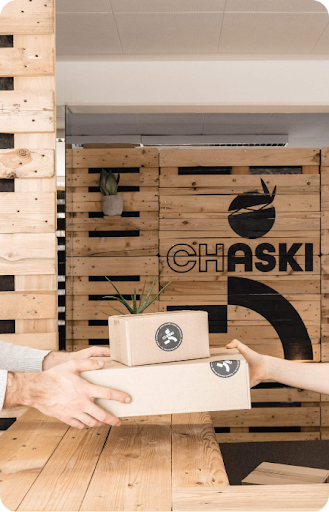
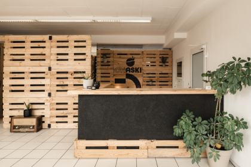
Kostenlos registrieren, Adresse angeben und Lieferungen flexibel in Konstanz abholen.
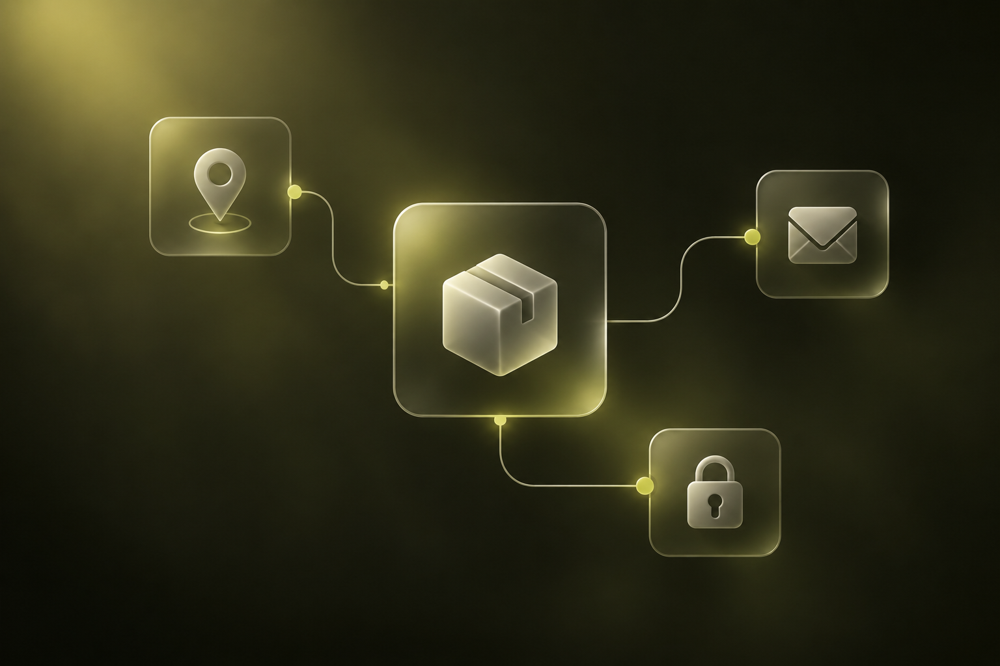
Erstelle in unter 2 Minuten dein kostenloses Kundenkonto. Du erhältst sofort deine persönliche Kundennummer ohne Abo oder Grundgebühr.
Bestelle bei Amazon.de, Zalando, Otto oder eBay und gib als Lieferadresse die August-Borsig-Str. 2a zusammen mit deiner CHASKI-ID an.
Sobald dein Paket eintrifft, wirst du per E-Mail informiert. Hole es bequem an der Theke oder rund um die Uhr am Schließfach per PIN-Code ab.
Transparenter Vergleich ohne versteckte Zoll- oder Vorweisegebühren.
Reguläre Auslandszustellung durch deutsche & internationale Onlineshops.
Deutsche Inlandsbestellung mit persönlicher Abholung oder 24/7 Schließfach.
Kalkuliere vorab deine Abholgebühr oder prüfe alle Tarife auf einen Blick. Keine Grundgebühr, keine Mitgliedschaft – Bezahlung erst bei Abholung.

| Kategorie | Maßstab / Gurtmaß | Freie Lagerzeit | Preis |
|---|---|---|---|
| Brief | Standard & Einschreiben | 30 Tage frei | 1,50 € |
| Versandtasche | Luftpolstertasche bis 35 cm | 30 Tage frei | 3,00 € |
| Paket XS | bis 35 cm (L + Kürzeste) | 30 Tage frei | 3,00 € |
| Paket S | 36 – 50 cm (L + Kürzeste) | 30 Tage frei | 4,00 € |
| Paket M | 51 – 80 cm (L + Kürzeste) | 30 Tage frei | 5,00 € |
| Paket L | 81 – 120 cm (L + Kürzeste) | 30 Tage frei | 7,00 € |
| Paket XL | 121 – 150 cm (L + Kürzeste) | 30 Tage frei | 10,00 € |
| Paket XXL | 151 – 200 cm (L + Kürzeste) | 30 Tage frei | 15,00 € |
| Sperrgut S | bis 350 cm (L + 2×B + 2×H) | 14 Tage frei | 20,00 € |
| Sperrgut M | bis 500 cm (L + 2×B + 2×H) | 14 Tage frei | 25,00 € |
| Europalette | bis 120 × 80 cm | 14 Tage frei | 25,00 € |
| Übermaßpalette | größer als 120 × 80 cm | 14 Tage frei | 35,00 € |
| PKW-Überführung | KFZ- & Fahrzeugzustellungen | Spezial-Anfrage | auf Anfrage |
| Vorfrankierte Pakete | Versandannahme / Retourenversand | Sofortversand | ab 5,00 € |
Erlebe unsere moderne Filiale in der August-Borsig-Straße 2a – mit herzlichem Thekenservice, eigener Packstation, Umkleidekabine und 24/7 PIN-Schließfächern.
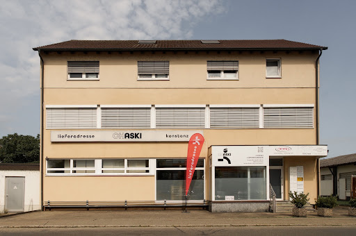
August-Borsig-Str. 2a in Konstanz-Stromeyersdorf. Nur 5 Minuten ab Grenze Kreuzlingen – komplett staufrei mit kostenlosen Parkplätzen direkt vor der Tür.
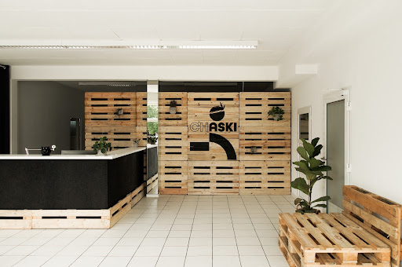
Unser herzliches Team empfängt dich an unserer charakteristischen Holz-Theke. Wir unterstützen persönlich bei Ausfuhrscheinen, Zollstempeln und Fragen.
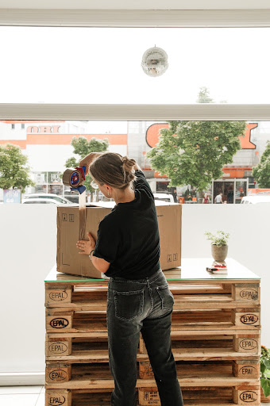
Kostenlose Nutzung unserer Packtische: Pakete vor Ort öffnen, Inhalt prüfen und Kartonagen umweltfreundlich direkt bei uns entsorgen.
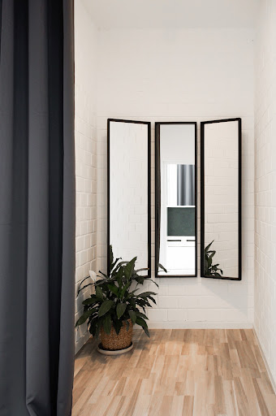
Kleidung und Schuhe aus Onlineshops direkt in unserer diskreten Umkleide mit 3-teiligem Spiegel anprobieren. Passt etwas nicht? Sofort als Retoure abgeben!
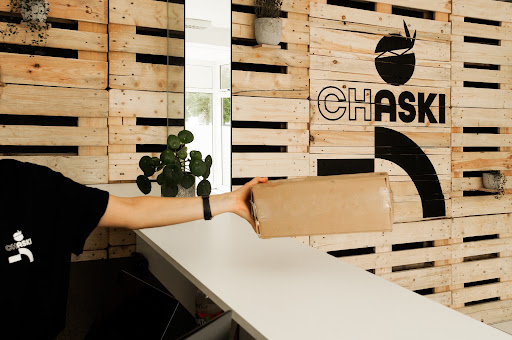
Einfach deine CHASKI-Kundennummer nennen oder Barcode vorzeigen: Dein Paket liegt griffbereit bereit. Schneller als jeder Paketshop.
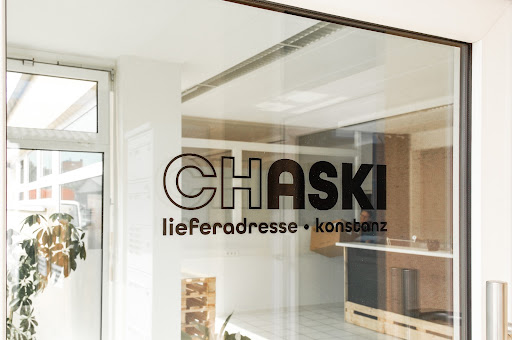
Komm vorbei wann es dir passt. Mit deinem persönlichen PIN öffnest du Eingangstür und dein Schließfach rund um die Uhr – auch an Sonn- und Feiertagen.
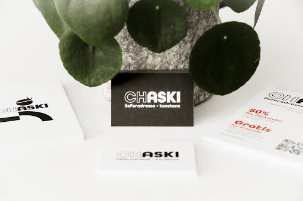
Nimm dir vor Ort unsere CHASKI-Karte mit oder profitiere direkt bei der Online-Registrierung.
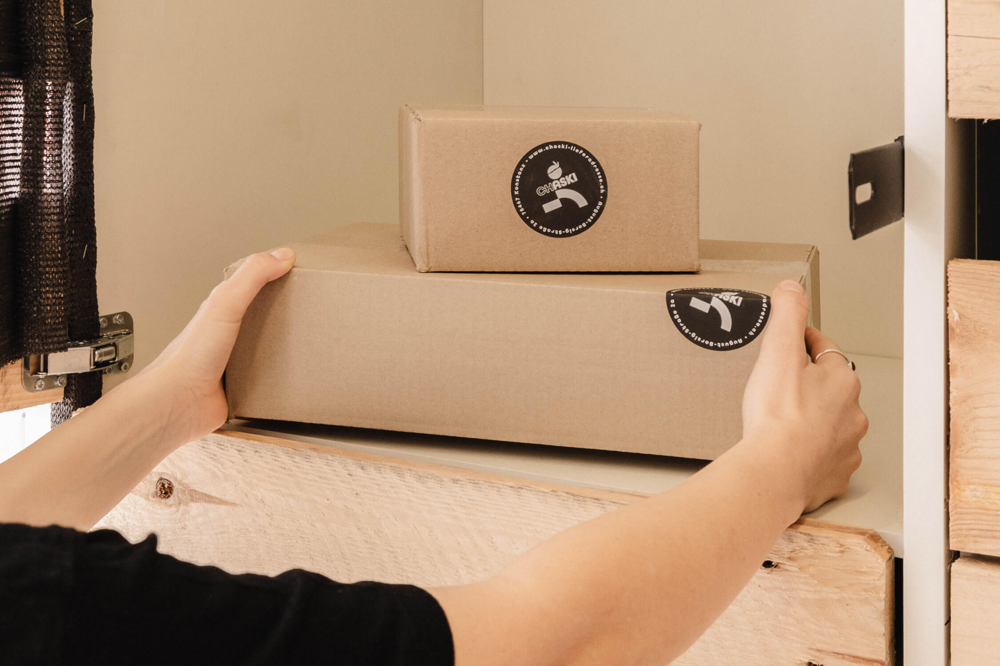
Als Chaski bezeichneten die Inkas einen Läufer, der Nachrichten überbrachte. Der damalige Postbote sozusagen.
Mehr über unsPersönlicher Service. Unkomplizierte Abholung. Gute Erfahrungen.
Ich kann Chaski in Konstanz nur empfehlen! Einfach richtig angenehmer Laden😊 super unkompliziert, total freundlich und perfekt für uns…
Ich kann den Paketshop CHASKI nur wärmstens empfehlen! Alle Mitarbeiter sind äußerst freundlich, stets zuvorkommend und immer hilfsbereit…
Ich bin begeistert vom Service von Chaski Konstanz! Der Versand war schnell, zuverlässig und völlig unkompliziert. Mein Paket kam…
Auszüge aus Kundenbewertungen auf Google.
Paketempfang ohne Umwege
Bestelle in deutschen und europäischen Onlineshops, nutze unsere Filialadresse als Lieferziel und umgehe hohe internationale Versandkosten. Wir nehmen deine Sendung sicher an und informieren dich, sobald sie zur Abholung bereitliegt.
Alles Wissenswerte für deine erste Lieferung nach Konstanz.
Gib deinen vollen Vor- und Nachnamen an. In das Adresszusatz- oder Firmenfeld setzt du deine persönliche Kundennummer (z. B. CH-12345). Als Anschrift verwendest du August-Borsig-Str. 2a, 78467 Konstanz. Unser System ordnet das Paket sofort deinem Konto zu.
Nein, niemals. Bei CHASKI gibt es weder Mitgliedsbeiträge noch Grundgebühren. Du bezahlst ausschließlich die Abholgebühr pro tatsächlich empfangenem Paket (z.B. 3,00 € für ein XS-Paket). Wenn du monatelang nichts bestellst, zahlst du exakt 0,00 €.
Sobald deine Sendung einsortiert ist, erhältst du per E-Mail deinen persönlichen PIN-Code. Mit diesem öffnest du die Eingangstür zur Abhol-Lounge und dein persönliches Schließfach zu jeder Tages- oder Nachtzeit – auch sonntags und an Feiertagen.
Alle Standardpakete lagern bei uns volle 30 Tage vollkommen kostenlos (Sperrgut 14 Tage). So kannst du problemlos mehrere Bestellungen aus unterschiedlichen Shops sammeln und mit einer einzigen Fahrt nach Konstanz mitnehmen.
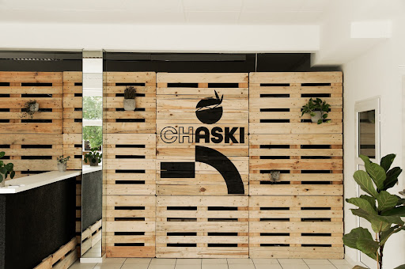
Bestelle noch heute versandkostenfrei in deutschen Shops und hole deine Pakete bequem in Konstanz ab.
August-Borsig-Str. 2a
78467 Konstanz
Industriegebiet Stromeyersdorf
Kostenlose Parkplätze vor der Tür
Hilfe bei Ausfuhrbelegen, Zollabstempelung und Paketabholungen: